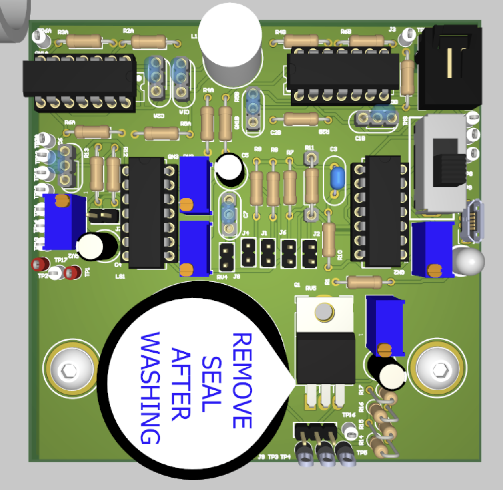
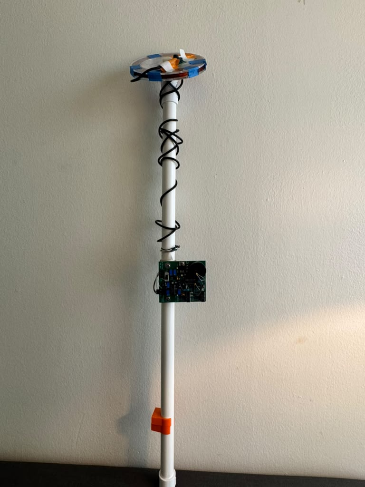
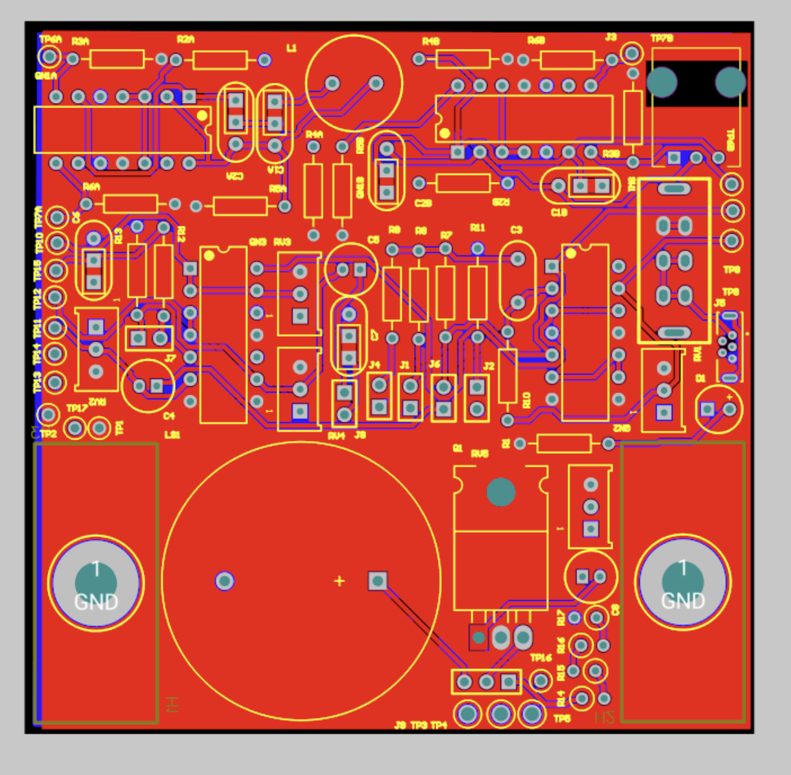
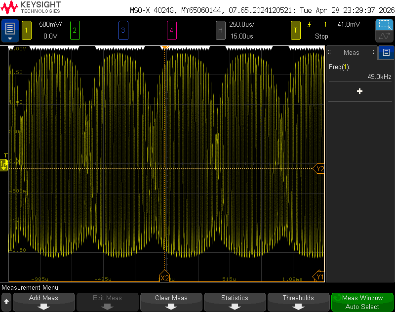

A full-custom analog metal detector built from discrete MOSFETs, taken through the entire design cycle: hand calculations, SPICE, schematic capture, PCB layout, hand assembly, and bench characterization.

3D render of the populated board: two oscillator transistor arrays, the mixer and CS amplifier stages, five tuning pots, and the TO-220 output FET.
The detector combines most of the analog building blocks studied through the semester into a single integrated system. Two LC oscillators, one with a fixed 10 mH inductor and one with a hand-wound variable inductor, are built around an ALD1103PBL CMOS transistor array. When a ferrous object enters the field of the variable coil, its inductance rises and that oscillator's frequency drops.
A differential pair wired as a virtual-ground summing amplifier acts as the mixer, generating components at the sum and difference of the two oscillator frequencies. A single-pole RC low-pass filter (~1.6 kHz cutoff) keeps the audio-band difference tone while suppressing the ~50 kHz carrier by roughly 30 dB. Two cascaded common-source stages provide ~40 dB of audio gain, and an IRLB8721PBF power NMOS source-follower buffers the signal into an 8 Ω speaker. A current mirror sets the mixer tail bias, and five trim potentiometers bias each stage into saturation after assembly.
The fixed oscillator ran at ~50 kHz and the free-air variable leg at ~48.8 kHz; bringing a ferrous target to the coil (a ~5% inductance increase) widened the audio beat from ~1.21 kHz to ~2.60 kHz, a clearly audible pitch shift. Every node on the bench agreed with both the LTspice simulation and the hand calculations to within a few percent in frequency and roughly 10% in amplitude.



Built entirely from discrete MOSFETs, no op-amp ICs
~40 dB audio gain with ~30 dB carrier rejection
Hand calc → SPICE → bench agreement within a few percent
Course: ESE 3190, University of Pennsylvania
Term: Spring 2026
Type: Individual final project